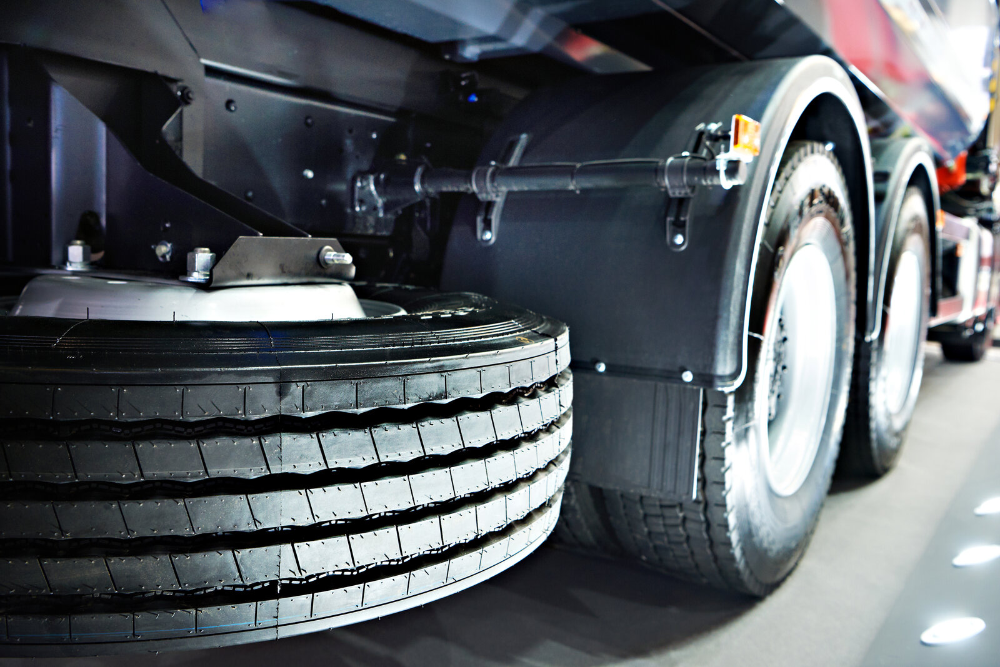

A truck casing with a small injury near the tread edge is a common decision point on a retread line: scrap it, or repair it and carry on. The shoulder is the awkward place for that call, because it flexes more than the crown. The trade press describes an industry method for it, the reinforced shoulder repair (RSR), and it comes with conditions that decide whether the casing stays in service.
This post summarises what we found about that method and suggests how a fleet running its own line can build it into casing intake. It carries no cost or savings figures, because none of the sources we reached measured one.
A note on sourcing
We could not open the original articles or the TRMG documents from our research environment, so everything below reflects what search results reported from each publisher (Modern Tire Dealer, Work Truck, FleetOwner and a repair-unit manufacturer’s technical bulletin). Two details differ between sources, and we flag them below. Read the current TRMG/TRIB guidance and your repair-unit manufacturer’s templates before you write a repair policy from this post. We did not research Canadian or Ontario requirements for this post.
Where RSR came from
- Who wrote it. Modern Tire Dealer reported from the 2013 SEMA Show that the Tire Industry Association presented guidelines for shoulder punctures on truck tires, using standard plug-and-patch materials. TRMG (the Tread Rubber and Tire Repair Materials Manufacturers’ Group) developed the recommended process, which can be performed in the field or in a retread plant, and TRIB approved it with some edits.
- Why it exists. As summarised from that coverage, TRMG’s stated concern was that certain repair materials were being overused in the shoulder and could not handle the shear forces inside the tire.
- The core rules. Anchor the body of the repair unit in a non-flex zone of the casing, and identify the repair with a blue triangle on the outside of the tire.
What the sources say about size and placement
- Injury size: the sources disagree. The 2013 coverage cites shoulder punctures up to 3/8 inch. Later trade articles (including Work Truck) describe small injuries of 5/16 inch (8 mm) or less. We could not tell which is current, so confirm the limit in the current TRMG/TRIB document before you set one.
- Placement is the point. The repair unit must not end in a high-flex area. The reported failure modes are cord breakout and edge lifting. One source says that if as little as 25% of a unit sits in a high-flex area, the added stress can cause them.
- Units can be shifted off centre, within limits. The reported rule of thumb is that a unit can be shifted by up to 50% to cover the full injury, and manufacturers supply templates showing how far a given unit can move while keeping its ends in non-flex zones.
- Unit selection (single-manufacturer guidance). One source, citing TRMG, says a 5/16 inch injury that needs a unit longer than a #20 should use a #22 or #24. A repair-unit manufacturer’s bulletin says large heavy-truck sizes such as 12.00R and 315/80 need a larger RSR-26 because of their bigger flex area, and that a unit should not sit closer than 3/8 inch (10 mm) to the bead toe. Treat these as that manufacturer’s instructions, not a universal rule.
- Sidewall is different. Trade coverage says sidewall injuries still require a section repair at a retread plant; they are outside the RSR method.
- Repairs can be limited. Modern Tire Dealer, quoting the RMA wall chart, notes that the number of repairs may be limited by application, economics and manufacturers’ recommendations.
What an in-house line can do with this
This section is our reasoning, not data. A fleet that runs its own line decides at intake which shoulder injuries are worth repairing, and it can write that decision down once:
- Set a written shoulder rule. Name the maximum injury size you accept, taken from the current TRMG/TRIB document, and the template you use to check unit placement. If a unit cannot be anchored in a non-flex zone for that injury, the casing does not get an RSR.
- Mark and record every RSR. The blue triangle tells the next person that a unit is installed. Add the repair to the casing record too, so a casing’s repair history is visible before it is accepted again.
- Keep it distinct from crown repairs. The limits for punctures in the crown are a separate question; see nail-hole repair limits.
- Add it to your intake step. Shoulder injuries are one of the things to look for in the casing inspection, and a casing that fails the rule should be coded as a reject with the reason recorded.
- Stock to match the rule. If you repair shoulders, you need the right range of units and the tools to prepare the injury. Our repair tools and consumables pages cover what we supply.
The point is control: when the accept-or-scrap call is made on your own bench against a written rule, it is yours to apply consistently and to audit. We are not claiming a specific saving from doing so.
What we are not claiming
- We are not publishing a fleet example, a repair success rate or a dollar figure. None of our sources measured one.
- We are not giving a repair specification. The size limit and unit choice must come from the current TRMG/TRIB documents and your repair-unit manufacturer.
- We did not cover crown or sidewall section repairs beyond noting where RSR stops.
Planning your own retread line?
We supply retreading machinery, consumables, components and repair tools from our Ontario warehouse, with transparent all-in Canadian pricing and local service. Tell us your tire sizes and volume and we will help you size the equipment and keep it supplied.
Request a quote →